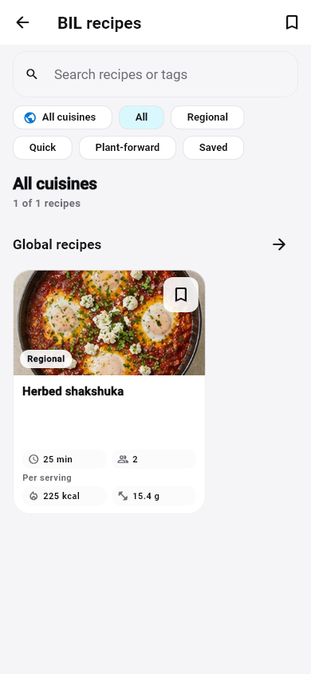
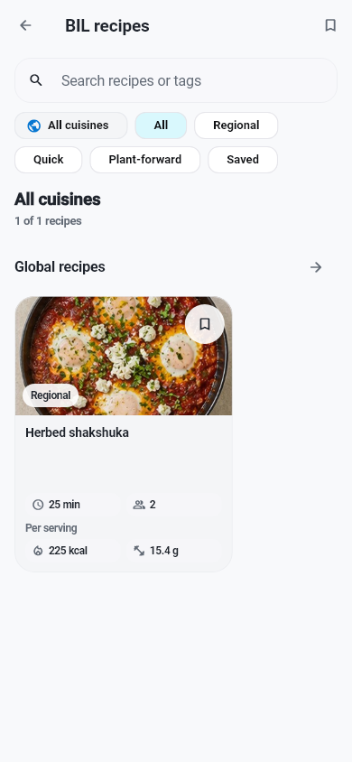
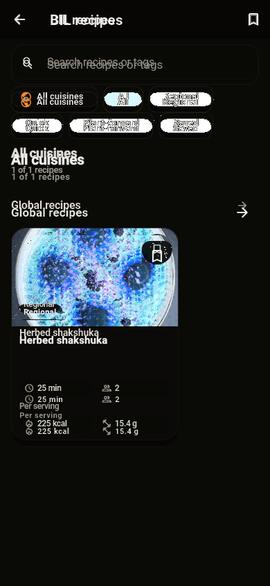
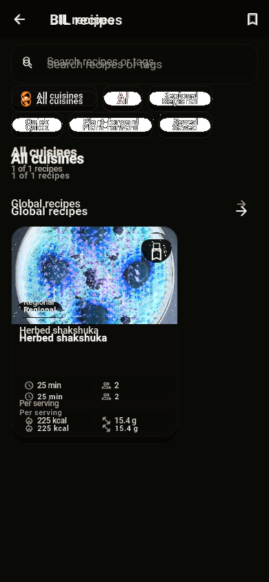

التصنيف المقترح: B. Recipes: صورةShakshuka ومقادير225kcal/15.4g و25min/2 servings محفوظة؛ CalmCanvas وSearch/Chips/Card وحدودها تغيرت.
RobotoEvidence / BILArabic or NotoArabicEvidence; readable real glyphs
Baseline test/features/wellness/goldens/recipe_library_polish_phone.png, commit 017d63449bd1b0d0fa6fbd592f494cb49d537a4a
Source: lib/features/wellness/presentation/recipe_library_page.dart:169
HOLD RED; main QA approves this exact pair individually. A: replace invalid font evidence only after signoff; B: verify intended source history and approve or reclassify C.
Same pixels as previous failed actual: True. Master unchanged, no approval.



